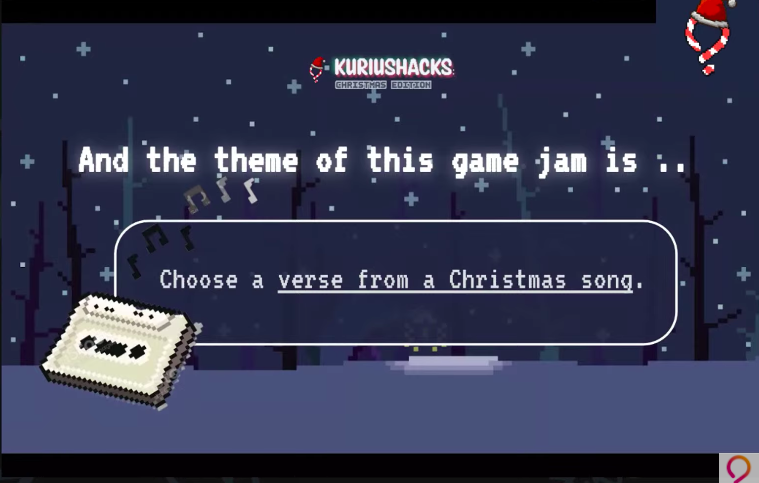

KuriusHacks Christmas Hackathon
The KuriusHacks Christmas Hackathon project is a game inspired by the classic "12 Days of Christmas" song, developed using GML, C, and JavaScript. The game features multiple levels, each reflecting a different verse of the song. Players progress through levels battling holiday-themed enemies, including "three French hens" and other iconic elements from the song. This project was developed during a five-day hackathon and showcases creativity, collaboration, and game development skills.
The game includes progressively challenging levels where players must strategize to defeat enemies, collect resources, and advance through each verse of the song. The festive visuals, coupled with engaging gameplay mechanics, make for an entertaining experience that aligns perfectly with the Christmas theme.

Features and Functionalities
Level-Based Gameplay: The game features multiple levels, each inspired by a verse from the "12 Days of Christmas" song. Players face off against unique enemies that reflect the corresponding day's gifts, providing a festive and challenging experience.
Holiday-Themed Enemies: Each level introduces different enemies inspired by the song, such as "three French hens" and "five golden rings." The enemies vary in difficulty and attack patterns, making each level unique and increasingly challenging.
Dynamic Combat System: Players engage in combat with holiday-themed enemies, using a variety of weapons and power-ups. The combat system is designed to be fast-paced and intuitive, allowing players to enjoy the thrill of defeating waves of foes.
Festive Visuals and Soundtrack: The game features vibrant holiday-themed visuals and an engaging soundtrack that brings the Christmas spirit to life. The soundtrack includes festive music and sound effects that enhance the overall experience.
Collaborative Development: The game was developed as part of a five-day hackathon, highlighting the collaborative nature of the project. Team members worked together to implement gameplay mechanics, level design, and visual assets within a tight timeframe.


Technologies Used
- GML (GameMaker Language)
- C
- JavaScript
- 2D Game Design
- Hackathon Collaboration